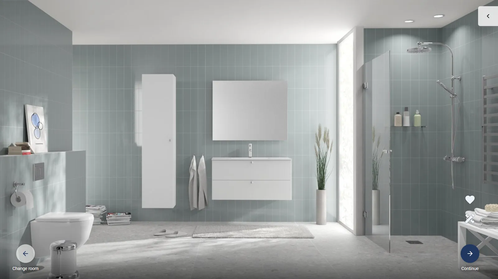

Spark Digital Showroom desktop v2: WPF rewrite
A WPF rewrite of a Windows kiosk app, about to reach 50 customers and hundreds of screens. I built it from scratch.
- Period
- 2026-05 – present
- My role
- Sole developer; built it from scratch
- Team
- Alone
- Status
- Active
- Built with
- C#, .NET, WPF, WebView2, Serilog, Inno Setup, Jenkins
- Made at
- SparkVision
- Part of
- Spark Digital Showroom

Summary
A rewrite of the Windows desktop app. The first version, built in .NET MAUI, proved restrictive; v2 is a more deliberate design: a WPF shell that wraps the deployed web configurator, with kiosk behaviour, a new installer and a signed release flow through the company's update hub. I built it from scratch.
AI-assisted: written with Claude Code from the start. I made the design decisions and reviewed the changes.
What I did
- Planned the rewrite as an epic of numbered stories and built the WPF shell with WebView2, the core settings layer and its setup file parser, and the kiosk exit gesture.
- Prototyped online licensing: a license service bootstrap and an in-app license client.
- Added local file logging, trimmed the customer log and logged a host inventory at startup.
- Made the kiosk work with the phone remote control: idle-timer resets, an apply-to surface selector and smoother product scans.
- Mapped the update hub and surveyed Windows updaters, then decided the install layout, per-customer targeting and the release flow before building it.
- Built the release path: one per-user installer built by Jenkins, a re-runnable release job, signed releases, and a checksum check on the hub.
- Moved the app to .NET 10 before .NET 8 support ended.
- Explained every customer setting in the example setup file and removed the unused ones.
- Made a kiosk log in, check its licence and fetch its setup file from the web admin, against a mocked identity service, so the installer no longer copies that file.
- Fixed the app not starting after an install that also installed WebView2, made the installer always create a desktop shortcut, and put the product's name, publisher and icon on the exe.
- Stated the Windows and PC requirements for kiosks in the install guide.
Decisions
A WPF shell around the deployed web apps
The first version, in .NET MAUI, felt restricting and had a start-up race in its web view. v2 is a WPF shell around WebView2 that wraps the web applications already deployed, so the desktop app adds kiosk behaviour and leaves the configurator to the web. The cost is that WebView2 draws over WPF, which broke the first exit button and cursor hiding.
Keep the existing update hub
I compared an own update client, three libraries and the company's existing updater, as it was and improved. A library looked like the production path early on, and I dropped that in October: the app ships through the existing hub.
One per-user installer, targeted by hub grants
Per-customer builds and a per-machine install gave way to one per-user installer, with the hub deciding who receives what. It needs no admin rights, a PC keeps its channel, and the test and public releases use the same build.
Sign by hand, verify in the job
The release job pauses for signing, then refuses a file that is not validly signed, timestamped and issued to the exact name. The checksum is taken after signing and the hub must serve the same value. Automatic selection once picked the wrong certificate, so the procedure now signs by name.
Part of Spark Digital Showroom